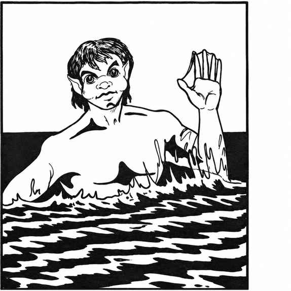

尼克希 · Nixie
 |
|
尼克希是栖息湖泊的水精灵，巢穴以活海草编织，95% 的情况下从 2 寸外无法发现；巢穴由 1–2 条巨雀鳝（20%）或 2–5 条狗鱼（80%）守卫，并可召来 10–100 条小鱼。若人类靠近 30 尺内，每 10 名尼克希可施展一次强力魅惑术，目标魔法豁免承受 −2。入水前施展解除魔法有 75% 的机会解除魅惑，入水后仅 10%；受魅惑者会被带回巢穴奴役一年，期间维持水下呼吸术。每名尼克希每天可对任意生物施展或解除一次水下呼吸术，持续一天。尼克希使用长匕首与飞镖（标枪），害怕火焰和强光；它们说自己的语言和通用语，外貌为绿肤、深绿发、银眼且手脚带蹼的鳞皮类人生物。